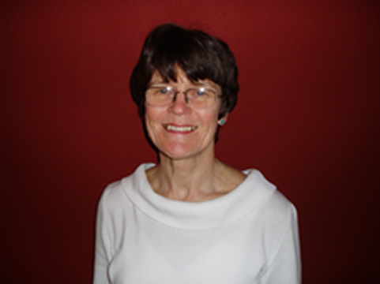

The Psyche and the Spirit of the Times
Human Violence: Origins, Emergence, and Rescue
Two respected psychologists from the Seattle community will address the questions of the origins of human violence and how we can individually and collectively address the epidemic of violence that is taking place in America.
A psychoanalyst will consider the violent potential within all of us by noting that when we are not in the in the company (embrace) of our humanity in terms of our active engagement with patient, compassionate, boundaried thought, we are compelled to operate in the pre-thinking mental realm etched by sensory bombardment and fragmentation of our mental capacities. Here is where idealization, derision, and polarization reside; here intolerance, impatience, dogmatic certainty—aspects of fundamentalist functioning, the realm of our inhumanity—prevail.
A depth psychologist will take a poetic approach to the nature and pattern of human violence. She will present literary and historical images as reminders of our intimate and sensory relationship with the archetype of Violence. What do we mean when we use this word, and how has it come to be embroidered in the very fabric of our human story? How is Violence trying to get through to us as we try time and again to shake it off without looking deeply into its countenance? Violence has been present in the most ancient of human stories. What might we be missing of its message as it coils itself around our collective lives and modern tragedies?
 George Callan, Ph.D. is an educator, mentor, and depth psychologist. She practices psychotherapy in Seattle, Washington and has taught at Antioch University and Pacifica Graduate Institute. George Callan, Ph.D. is an educator, mentor, and depth psychologist. She practices psychotherapy in Seattle, Washington and has taught at Antioch University and Pacifica Graduate Institute. |
 Maxine Anderson, M.D. is a training and supervising analyst with the Seattle Psychoanalytic Society and Institute as well as being one of the founding members of the Northwestern Psychoanalytic Society. |
C.G. Jung Society, Seattle home page
Updated: 20 May 2005
webmaster@jungseattle.org